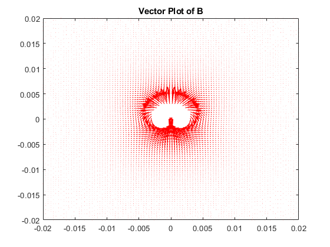
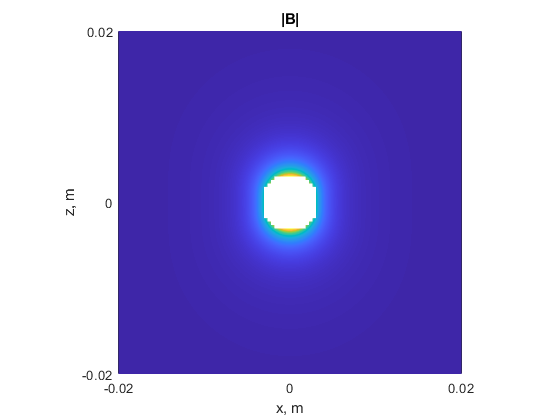
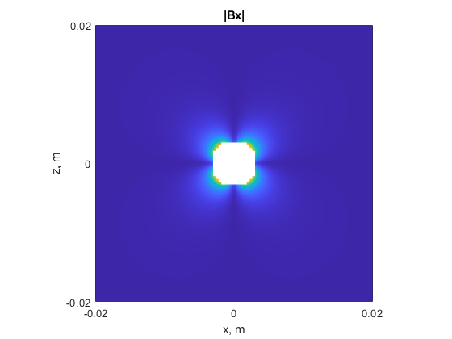
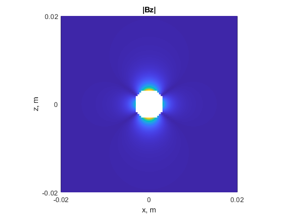
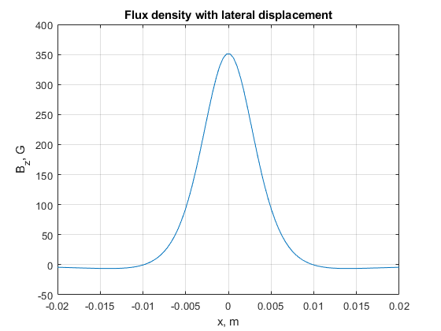
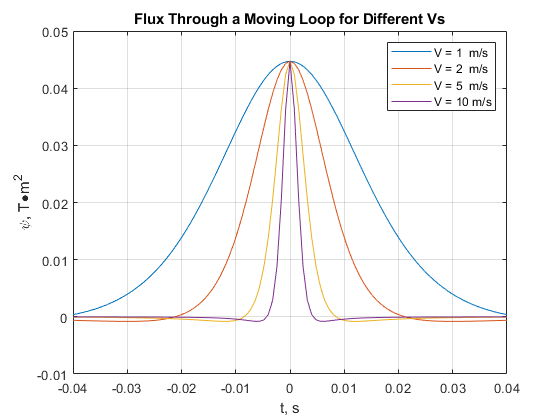
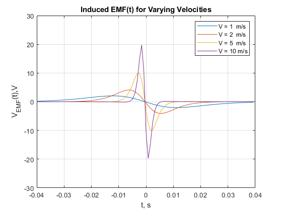
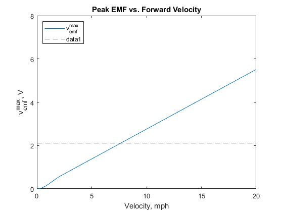

Contents
clc; clear all; close all;
Modeling a simple permanent magnet
x = linspace(-0.02,0.02); z = linspace(-0.02,0.02); C = 350/(5.8*10^(6)); [X, Z] = meshgrid(x, z); th = atan2(X,Z); phi= atan2(Z,X); r = sqrt(X.^2 + Z.^2); r(r <=0.003) = NaN; %excludes number smaller than Br = (C*2.*cos(th))./(r.^3); Bth = (C .*sin(th) ./ r.^3); Bx = cos(th).*Bth + sin(th).* Br ; Bz = cos(th).*Br - sin(th).* Bth; figure(1) quiver(x , z , Bx , Bz , 6 , 'r'); xlim([-0.02 , 0.02]) ylim([-0.02 , 0.02]) title('Vector Plot of B') %a) |B| figure(2) magB = sqrt((Bx).^2 + (Bz).^2); pcolor (x , z , magB) axis equal shading interp xlim([-0.02 , 0.02]) xticks([-0.02 , 0 , 0.02]) xlabel('x, m') yticks([-0.02 , 0 , 0.02]) ylim([-0.02 , 0.02]) ylabel('z, m') title('|B|') hold on %b) Magnitude of Bx figure(3) magBx = abs(Bx); pcolor(x , z , magBx) axis equal shading interp xlim([-0.02 , 0.02]) xticks([-0.02, 0, 0.02]) xlabel('x, m') ylim([-0.02 , 0.02]) yticks([-0.02 , 0 , 0.02]) ylabel('z, m') title('|Bx|') hold on %c) Magnitude of Bz figure(4) magBz = abs(Bz); pcolor(x , z , magBz) axis equal shading interp xlim([-0.02 , 0.02]) xlabel('x, m') xticks([-0.02 , 0 , 0.02]) ylim([-0.02,0.02]) yticks([-0.02 , 0 , 0.02]) ylabel('z, m') title('|Bz|') hold on z = 7*10^(-3); r = sqrt(x.^2+z^2); th = atan2(x, z); Bth = sin(th) .* (C./(r.^3)) ; Br = cos(th) .* (C./(r.^3))*2 ; Brz = Br .* cos(th); Bthz = -1 .* Bth .*sin(th); Bz = Bthz + Brz; figure(5) plot(x , Bz); title('Flux density with lateral displacement') xlabel("x, m"); xlim([-0.02 , 0.02]) ylabel("B_z, G"); ylim([-50 , 400]) grid on    
Field Sensor Responses
Flux Through a Moving Loop for Different Vs & Induced EMF for diff vs
ph = zeros(1, 101); dph = zeros(1, 100); a = 10^(-6); z = 0.03; for V = [1, 2, 5, 10] t = linspace(-0.04, 0.04, 101); for i = 1: length(t) x = t(i) * V; th = atan2(x,z); r = sqrt(x.^2 + z.^2); Br = 2*C.*cos(th)./r.^3; Bth = C.*sin(th)./r.^3; ph(i) = 1e4*(Br.*cos(th)-(Bth).*sin(th))*a; if i ~= 1 dph(i-1) =(ph(i) - ph(i-1))/(t(i)-t(i-1)); end end tnew = t(1:(length(t)-1)); figure(6) plot(t, ph) title('Flux Through a Moving Loop for Different Vs') legend('V = 1 m/s','V = 2 m/s','V = 5 m/s', 'V = 10 m/s') xlabel('t, s') ylabel('\psi, T\bulletm^2') hold on figure(7) plot(tnew, dph) title('Induced EMF(t) for Varying Velocities') legend('V = 1 m/s','V = 2 m/s','V = 5 m/s', 'V = 10 m/s') xlabel('t, s') ylabel('V_E_M_F(t),V') hold on end hold off figure(6) xlim([-0.04,0.04]) xticks(-0.04: 0.01 :0.04) ylim([-0.01,0.05]) yticks(-0.01: 0.01 :0.05) grid on figure(7) xlim([-0.04,0.04]) xticks(-0.04: 0.01 :0.04) ylim([-30,30]) yticks(-30: 10 :30) grid on
Warning: Ignoring extra legend entries. Warning: Ignoring extra legend entries. Warning: Ignoring extra legend entries. Warning: Ignoring extra legend entries. Warning: Ignoring extra legend entries. Warning: Ignoring extra legend entries. 
System-level Calculations
t = linspace(-0.04, 0.04, 301); vmph = linspace( 0, 20, 300); x = []; psiA = a*10^4; d = 662*10^(-3); z = 0.03; vms = vmph.*0.447; freq = vms/pi/d; vel = 0.2*pi*freq; for V = vel x = [x ; t*V]; end th = atan2(x , z); r = sqrt(x.^2+z.^2); Bth = (C./r.^3).*sin(th); Br = 2.*(C./r.^3).*cos(th); Brx = Br.*cos(th); Bthz= -1*Bth.*sin(th); Bz = Brx + Bthz; psi = psiA.*Bz; d = []; for V = 1:numel(vel) %number of elements in a matrix dv = []; for i = 1:(numel( psi(1,:))-1) dv = [dv, (psi(V, i+1) - psi(V, i))/(t(i+1) - t(i))]; end d = [d, max(dv)]; end figure plot(vmph, d); h = legend('v^{max}_{emf}', '2.1 V','Location','northwest'); yline(2.10, '--'); xlabel('Velocity, mph'); xticks([0, 5, 10, 15, 20]) xlim([0,20]) ylabel('v^{max}_{emf}, V'); yticks([0, 2, 4, 6, 8]) ylim([0,8]) title('Peak EMF vs. Forward Velocity')
Warning: Ignoring extra legend entries.